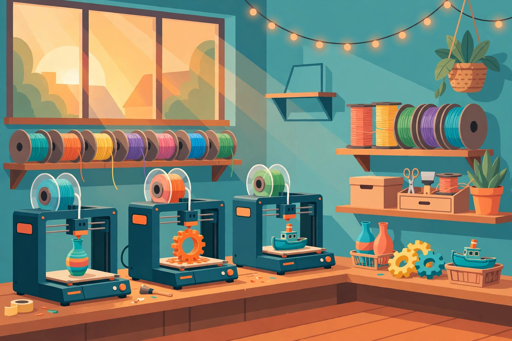
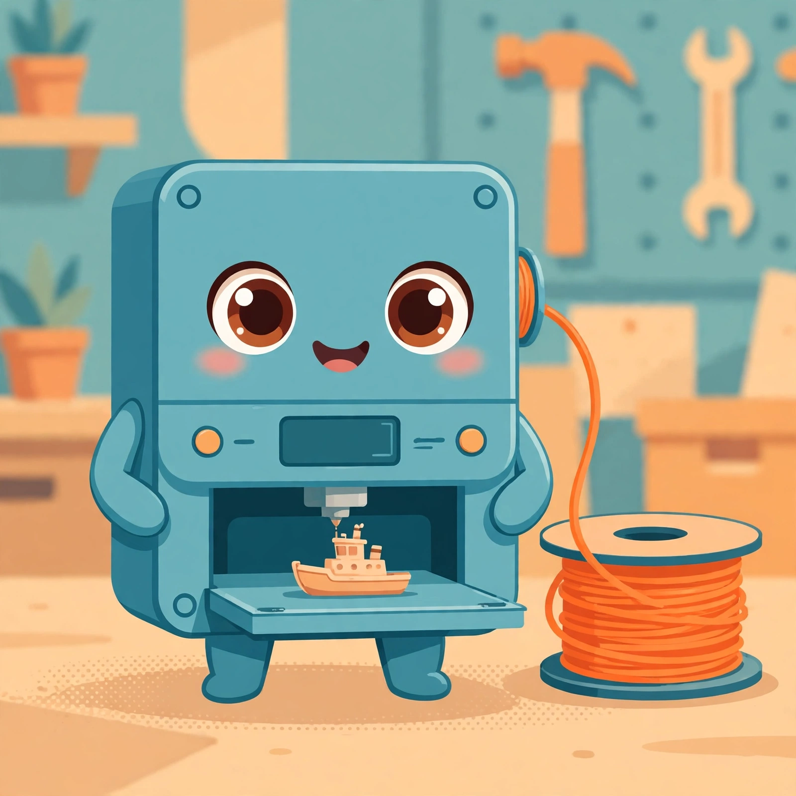

Welcome to the Print Shop — filament on the shelves, printers humming, and every design ready to print.
Meet Pip the Printer, the mascot of this world.

The Signature 3D Print Mega Mall is the tangible wing of the network: public print designs, Signature originals, and the printers that make them. The public archive holds 62 designs, and the Signature 3D Print Database holds 60 Signature originals.
Two working tools, right here on the page. Each one says what it does and what it cannot do. Neither tool reaches the live web, and neither one needs a key.
Enter a print height, a layer height, and seconds per layer to get the layer count and the print time in minutes.
Height (mm): Layer (mm): Seconds per layer:
Enter a filament length in metres to get its weight in grams, at about 3 grams per metre for 1.75 mm PLA (a stated estimate).
Length (m):
Designs, printables, and demos — free, downloadable, usable on the page. Every product is labeled Signature or Fun. Nothing here is for sale.
A printable calibration kit: a Benchy checklist, a layer-height gauge, and a first-layer guide.
Making: print the printable file, print a Benchy, and check each item on the list against the print.
A printable ring of filament swatches, one for each material in the archive.
Making: print the printable file on card, punch the swatches, and ring them in order of the archive groups.
A paper fleet of little tugboats, in the manner of the 3D Benchy, to float in a bowl of water.
Making: print the printable file, cut out the boats, fold along the lines, and float them. They are paper, not printed plastic.
Download all product lines as a printable (text)
Pip the Printer once printed a tugboat so small it floated in a teacup. The teacup is still sailing. (Fun — a made-up tale, not a record.)